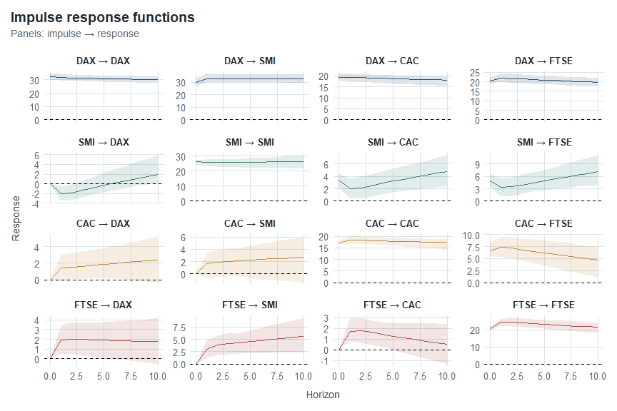
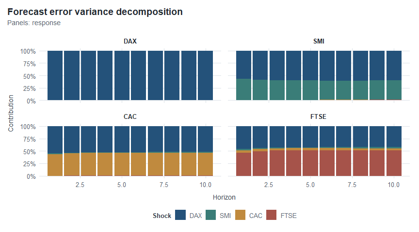
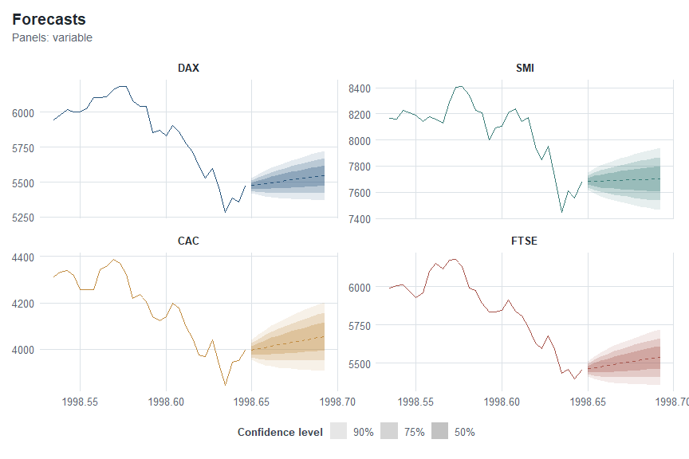

A tidy interface for VAR models fitted with vars.
tidyvars makes results from Vector Autoregressive (VAR) models easier to inspect, manipulate and visualize.
The package does not replace vars or reimplement VAR econometrics. vars performs the statistical calculations; tidyvars organizes the results into consistent tidy objects that work naturally with dplyr, tidyr, and ggplot2.
Installation
tidyvars is currently under development. The tv_2.0 version can be installed from GitHub with pak:
devtools::install_github("Reckziegel/tidyvars")Quick start
Model estimation stays exactly where it belongs: in vars.
From this point on, tidyvars provides a consistent interface for working with the fitted model.
Inspect model results
A fitted vars model contains several equation-specific and nested objects. tidyvars turns the most common results into tidy tables.
tv_tidy(model)
#> <tidyvars coefficients>
#> Equations: 4 | Terms: 9
#> # A tibble: 36 × 6
#> equation term estimate std_error statistic p_value
#> <chr> <chr> <dbl> <dbl> <dbl> <dbl>
#> 1 DAX DAX.l1 0.996 0.0420 23.7 7.67e-109
#> 2 DAX SMI.l1 -0.102 0.0293 -3.47 5.26e- 4
#> 3 DAX CAC.l1 0.0468 0.0458 1.02 3.07e- 1
#> 4 DAX FTSE.l1 0.0927 0.0360 2.58 1.01e- 2
#> 5 DAX DAX.l2 -0.0219 0.0419 -0.522 6.01e- 1
#> 6 DAX SMI.l2 0.117 0.0293 3.98 7.18e- 5
#> 7 DAX CAC.l2 -0.0373 0.0460 -0.811 4.17e- 1
#> 8 DAX FTSE.l2 -0.0925 0.0361 -2.56 1.05e- 2
#> 9 DAX const -3.67 13.4 -0.275 7.84e- 1
#> 10 SMI DAX.l1 0.0119 0.0517 0.230 8.18e- 1
#> # ℹ 26 more rows
tv_glance(model)
#> <tidyvars equation summaries>
#> Equations: 4
#> # A tibble: 4 × 13
#> equation r_squared adj_r_squared sigma statistic p_value df log_lik aic
#> <chr> <dbl> <dbl> <dbl> <dbl> <dbl> <dbl> <dbl> <dbl>
#> 1 DAX 0.999 0.999 32.2 262882. 0 8 -9084. 18189.
#> 2 SMI 0.999 0.999 39.7 407363. 0 8 -9471. 18962.
#> 3 CAC 0.998 0.998 26.1 114737. 0 8 -8691. 17402.
#> 4 FTSE 0.999 0.999 30.2 242423. 0 8 -8964. 17948.
#> # ℹ 4 more variables: bic <dbl>, deviance <dbl>, df_residual <int>, n_obs <int>
tv_augment(model)
#> <tidyvars augmented data>
#> Variables: 4 | Observations: 1860
#> # A tibble: 7,440 × 5
#> index variable observed fitted residual
#> <dbl> <chr> <dbl> <dbl> <dbl>
#> 1 1991. DAX 1629. NA NA
#> 2 1991. SMI 1678. NA NA
#> 3 1991. CAC 1773. NA NA
#> 4 1991. FTSE 2444. NA NA
#> 5 1992. DAX 1614. NA NA
#> 6 1992. SMI 1688. NA NA
#> 7 1992. CAC 1750. NA NA
#> 8 1992. FTSE 2460. NA NA
#> 9 1992. DAX 1607. 1609. -2.66
#> 10 1992. SMI 1679. 1687. -8.86
#> # ℹ 7,430 more rowstv_tidy() returns coefficient estimates by equation, tv_glance() provides equation-level summaries, and tv_augment() aligns observed values, fitted values, and residuals.
The outputs use predictable lower-case snake_case column names while preserving the original variable names from the model.
Because the results are tidy, they can immediately enter a normal tidyverse workflow:
model |>
tv_tidy() |>
dplyr::filter(p_value < 0.05) |>
dplyr::select(equation, term, estimate, p_value)
#> <tidyvars coefficients>
#> Equations: 4 | Terms: 7
#> # A tibble: 18 × 4
#> equation term estimate p_value
#> <chr> <chr> <dbl> <dbl>
#> 1 DAX DAX.l1 0.996 7.67e-109
#> 2 DAX SMI.l1 -0.102 5.26e- 4
#> 3 DAX FTSE.l1 0.0927 1.01e- 2
#> 4 DAX SMI.l2 0.117 7.18e- 5
#> 5 DAX FTSE.l2 -0.0925 1.05e- 2
#> 6 SMI SMI.l1 0.962 9.57e-133
#> 7 SMI FTSE.l1 0.145 1.10e- 3
#> 8 SMI FTSE.l2 -0.131 3.15e- 3
#> 9 CAC SMI.l1 -0.0713 2.68e- 3
#> 10 CAC CAC.l1 1.04 4.93e-144
#> 11 CAC FTSE.l1 0.0840 3.98e- 3
#> 12 CAC SMI.l2 0.0834 4.48e- 4
#> 13 CAC FTSE.l2 -0.0895 2.24e- 3
#> 14 FTSE SMI.l1 -0.0912 9.15e- 4
#> 15 FTSE FTSE.l1 1.18 3.37e-207
#> 16 FTSE SMI.l2 0.109 7.14e- 5
#> 17 FTSE FTSE.l2 -0.199 4.89e- 9
#> 18 FTSE const 39.2 1.78e- 3There is no need to navigate model$varresult, combine equation outputs manually, or reshape them before analysis.
Dynamic analysis
Impulse response functions and forecast error variance decompositions follow the same pattern.
An impulse response can be inspected directly as data:
irf |>
dplyr::filter(
impulse == "DAX",
response == "SMI"
)
#> <tidyvars IRF>
#> Impulses: 1 | Responses: 1 | Horizons: 0-10
#> # A tibble: 11 × 6
#> horizon impulse response estimate lower upper
#> <int> <chr> <chr> <dbl> <dbl> <dbl>
#> 1 0 DAX SMI 29.8 26.9 33.0
#> 2 1 DAX SMI 32.7 29.7 36.7
#> 3 2 DAX SMI 32.9 29.7 36.6
#> 4 3 DAX SMI 32.8 29.7 36.3
#> 5 4 DAX SMI 32.8 29.6 36.1
#> 6 5 DAX SMI 32.8 29.6 36.0
#> 7 6 DAX SMI 32.8 29.6 35.9
#> 8 7 DAX SMI 32.7 29.5 35.9
#> 9 8 DAX SMI 32.7 29.5 35.9
#> 10 9 DAX SMI 32.7 29.5 35.9
#> 11 10 DAX SMI 32.6 29.4 35.9Each row identifies the horizon, impulse, response, estimate, and confidence interval.
The same object can be plotted directly:
autoplot(irf, layout = "wrap") +
theme_tidyvars() +
palette_tidyvars()
FEVD results are also returned in tidy form, with one contribution for each horizon, response, and shock:
autoplot(fevd) +
theme_tidyvars() +
palette_tidyvars()
Conceptually:
IRF → response to a shock through time
FEVD → contribution of each shock to forecast uncertaintyBoth objects can be filtered, transformed, joined, or plotted using standard tidyverse tools.
Forecasting
tv_predict() converts forecasts from vars into a single tidy object containing historical observations, point forecasts, and confidence intervals.
Multiple confidence levels can be requested at once:
prediction <- tv_predict(
model,
n_ahead = 12,
level = c(0.50, 0.75, 0.90)
)
prediction
#> <tidyvars forecast>
#> Variables: 4 | History: 1860 | Forecast: 12
#> # A tibble: 7,584 × 8
#> index variable type level observed estimate lower upper
#> <dbl> <chr> <chr> <dbl> <dbl> <dbl> <dbl> <dbl>
#> 1 1991. DAX history NA 1629. NA NA NA
#> 2 1991. SMI history NA 1678. NA NA NA
#> 3 1991. CAC history NA 1773. NA NA NA
#> 4 1991. FTSE history NA 2444. NA NA NA
#> 5 1992. DAX history NA 1614. NA NA NA
#> 6 1992. SMI history NA 1688. NA NA NA
#> 7 1992. CAC history NA 1750. NA NA NA
#> 8 1992. FTSE history NA 2460. NA NA NA
#> 9 1992. DAX history NA 1607. NA NA NA
#> 10 1992. SMI history NA 1679. NA NA NA
#> # ℹ 7,574 more rowsThe result can be plotted directly:
autoplot(prediction, n_history = 30) +
theme_tidyvars() +
palette_tidyvars()
n_history controls only how much historical context is displayed. The forecast horizon itself is never truncated.
As with the other tidyvars objects, the forecast remains available as ordinary tidy data for further manipulation.
Diagnostics
Common VAR diagnostics are exposed through the same tabular interface:
tv_causality(model)
#> <tidyvars causality tests>
#> Causes: 4 | Tests: 2
#> # A tibble: 8 × 9
#> cause test statistic df df1 df2 boot_runs p_value method
#> <chr> <chr> <dbl> <dbl> <dbl> <dbl> <dbl> <dbl> <chr>
#> 1 DAX granger 0.895 NA 6 7396 NA 0.497 Granger c…
#> 2 DAX instantaneous 763. 3 NA NA NA 0 H0: No in…
#> 3 SMI granger 4.70 NA 6 7396 NA 0.0000874 Granger c…
#> 4 SMI instantaneous 691. 3 NA NA NA 0 H0: No in…
#> 5 CAC granger 3.79 NA 6 7396 NA 0.000899 Granger c…
#> 6 CAC instantaneous 702. 3 NA NA NA 0 H0: No in…
#> 7 FTSE granger 3.86 NA 6 7396 NA 0.000750 Granger c…
#> 8 FTSE instantaneous 647. 3 NA NA NA 0 H0: No in…
tv_normality_test(model)
#> <tidyvars normality tests>
#> Scopes: 1 | Tests: 3
#> # A tibble: 3 × 7
#> scope variable test statistic df p_value method
#> <chr> <chr> <chr> <dbl> <dbl> <dbl> <chr>
#> 1 multivariate <NA> jarque_bera 9979. 8 0 JB-Test (multivaria…
#> 2 multivariate <NA> skewness 146. 4 0 Skewness only (mult…
#> 3 multivariate <NA> kurtosis 9832. 4 0 Kurtosis only (mult…
tv_serial_test(model)
#> <tidyvars serial tests>
#> Tests: 1
#> # A tibble: 1 × 8
#> test lags statistic df df1 df2 p_value method
#> <chr> <int> <dbl> <dbl> <dbl> <dbl> <dbl> <chr>
#> 1 portmanteau_asymptotic 16 463. 224 NA NA 0 Portmanteau …These functions organize the corresponding results from vars rather than reimplementing the underlying statistical tests.
The returned tables use normalized identifiers and predictable schemas, making diagnostic results easy to filter, compare or include in reports.
Visualization
tidyvars provides autoplot() methods for IRFs, FEVDs, and forecasts.
The plotting methods define the structure of the visualization but do not impose the visual identity of the package.
A tidyvars plot is still a regular ggplot object:
autoplot(irf) +
ggplot2::theme_classic()The optional visual system separates layout from colour:
autoplot(irf) +
theme_tidyvars() +
palette_tidyvars()theme_tidyvars() → layout and typography
palette_tidyvars() → colourstheme_tidyvars() controls structural elements such as typography, spacing, grids, facets, and legends without changing the colours used for the data.
palette_tidyvars() applies the package colour identity only when explicitly requested.
Discrete scales are also available independently for ordinary ggplot2 graphics:
This keeps the visual system optional and fully compatible with normal ggplot2 customization.